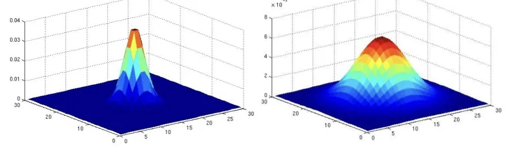
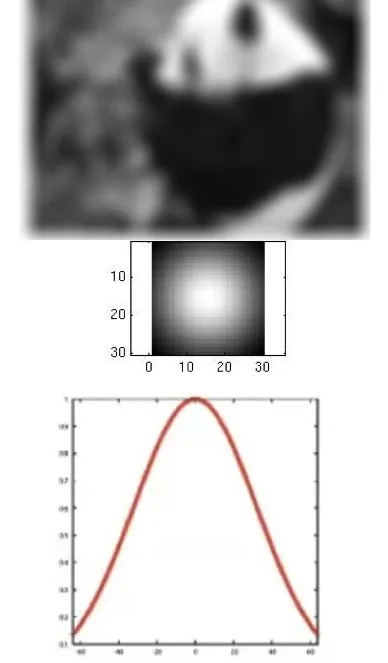

计算机视觉 · 第 2 章 图像处理基础
2.5 高斯滤波
上一节末尾已经给出了高斯滤波的定义和 3×3 的模拟近似核，这一节补上它剩下的半张脸：两个可以调的参数——核的大小和标准差 σ。课件的讲法很像做实验，固定一个变量、换另一个变量，用并排的结果图说明它们各自把图像推向多模糊。理解了这两个旋钮，才谈得上在实际问题里调出一个合适的平滑力度。
1. 参数一：高斯核的大小
第一个参数是高斯滤波核的大小，也就是邻域取多大。课件的结论很干脆：σ 固定，核越大图像越模糊。这跟上节均值滤波的规律是同一条道理——核越大，参与加权的邻域越广，中心像素的取值被越多邻居摊平，相邻像素之间的差异被抹得越平，细节也就越站不住。
课件用四组结果做对照：先是 σ = 5 时分别取 10×10 和 30×30 的核，这两组只放大了核，可以直接看出核变大带来的模糊；接着把核固定为 30×30，把 σ 换成 2 和 25，与 σ = 5 的那组形成一个 σ 从 2 到 25 的序列。前两组为「核」服务，后三组为下面要讲的「σ」服务。

值得一提的是，核大小的影响并不只是「模糊多少」。核越大，一次运算要访问的像素越多、计算量越大，所以实际使用时核的大小要连同计算代价一起权衡；课件把核开到 30×30 这个量级，是为了把参数的影响放大到肉眼可见。
2. 参数二：标准差 σ
第二个参数是高斯分布的标准差 σ，它决定权重的分布形状，也就是「邻居」这个概念被拉得多宽。课件把核大小固定为 30×30，比较了 σ = 1、4、10 三种取值：σ 越小，权重越集中在中心附近，钟形曲线又高又窄，邻域边缘的像素几乎拿不到权重，结果也就越接近原图；σ 越大，曲线越平缓，权重被摊到更大的范围里，远处像素也能分到可观的权重，模糊程度随之上升，结果越来越接近邻域的简单平均。
这一点正好接上上一节讲噪声时用到的 σ：高斯噪声用均值 μ 和方差 σ² 描述它有多「散」，而滤波核里的 σ 控制的是我们愿意把多大范围内的像素当成邻居。名字相同，都在描述「分布的宽度」，但一个是噪声的性质，一个是我们主动选定的参数。

本节小结
- 高斯滤波的两个可调参数是核的大小和标准差 σ，它们共同决定平滑力度；核小、σ 小则接近原图，核大、σ 大则模糊明显。
- σ 固定时核越大图像越模糊：邻域越广，中心像素越是被众多邻居摊平，细节丢得越多（与均值滤波「窗口越大越模糊」同理）。
- 核固定（如 30×30）时，σ 越大权重分布越平缓、模糊越强，σ 越小权重越集中在中心、结果越接近原图。
- 课件的对照是控制变量的：σ = 5 用 10×10 与 30×30 比核大小；30×30 用 σ = 2、5、25 和 σ = 1、4、10 比 σ 的大小。
- 权重按距离衰减，是高斯滤波与均值滤波的根本差别——前者更看重中心像素附近的邻居（见 2.4 节的高斯核）。